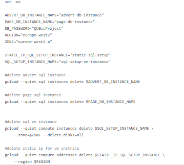

Conor McFeely
Hello I'm Conor McFeely a QUB Software Engineering Graduate. This page contains the details of my education and past employment as well as showcasing some of my projects.
Experience
Lab Demonstrator
Worked as a student demonstrator delivering Computer Architecture and Web Development laboratory sessions to first year students.
Junior Software Developer (Placement)
I completed my placement year as a junior developer within the Department of Finance's Digital Development team. Worked developing ASP.NET MVC web applications using .NET Framework and .NET Core for use within the NorthernIreland Civil Service. During the year I worked in an agile team that adopted Kanban for its development process.
Coach
Worked as a coach within the IMHAPPY project delivering accredited technology and computing-based CPPD modules to children and young adults at Ulster University's Coleraine campus. Also assisted with the delivery of technology activity days in partnership with the NI Science Festival, demonstrating courses to the wider community.
Education
Queen's University Belfast
Ulster University
Skills
Icon list of programming languages, frameworks and tools that I have prior experience with.
Projects
Projects I have completed as part of structured learning, practising a new skillset or satisfying my own curiosity on a subject.
NI Assembly Election Voting Graphs LIVE
 See more details about the NI Assembly Graph project
See more details about the NI Assembly Graph project
Project Info
I began this project as an exercise to gain a better understanding of Proportional Representation and how the Single Transferable Vote system works. I found the datasets from http://electionsni.org/data/ and set about exploring the data to satisfy my curiosity. I created 3 graphs for each count: (i) an initial graph showing that state of the count at this stage highlighting the candidate(s) that have been eliminated and those that have been elected, (ii) a second graph that highlights how the votes have been transferred, and (iii) a third showing the election state before the next count begins. There is also a final graph for each constituency count that shows which candidates were elected after the final count was finished (in the case that the final count did not result in 5/6 candidates getting past the election vote threshold).

The project initially consisted of only these graphs for each constituency over the 3 election years available (2011, 2016, 2017). I decided to also create graphs to showing information about the voter distributions. These showed eligible voters, actual turnout and spoiled votes for each constituency. Also created graphs to show (i) the party distribution for running candidates and of (ii) winning candidates for each constituency count.

On a constituency's result page you can see all the graphs mentioned above for the of the election results in 2011, 2016 and 2017.
The index page of the site contains a map highlighting the constituency boundaries within Northern Ireland. Clicking on a constituency will bring the user to that constituency's result page.

With this project I wanted to gain knowledge of GitHub's CI features. To accomplish this I implemented some basic unit tests using pytest and made use of GitHubs action workflows to create a testing job to run on pushes to the repository.
Cloud Computing Project: Search Engine
Project Info
The system was composed of three components:
- A spider indexer that could crawl the web and collect data from pages (was a good citizen that implemented best practices).
- An advert system that contains a directory of adverts with associated keywords that could be displayed alongside search results or could be embedded onto thirdparty sites/services.
- A search system that takes user input and returns results by querying the indexed pages and would show relevant adverts alongside the search results.
Idexer Component
In the indexer a user can provide a URL to a web frontend to allow the system to scrape that page and add it to the database.
After successfully indexing the page you are given the option to crawl the other URLs that were found within the content of the page that has just been indexed.
Image showing how indexed pages appear in the search component.
Below shows some of the the code for the implementation of the Indexer component

Advert Component
The advert component allows users to submit new adverts into the database. The user can submit advert content and provide a list of keyword terms that they want their advert to be associated with, they can also provide a url for the advert to link to.
The component also has a json endpoint to provide requests with relevant advert data. A user can make a request to the endpoint providing keyword(s) and will receive back a json response of adverts containing those keywords.
Example response from the advert component when requesting adverts with the keyword "lemon":
Below shows some of the code for the advert json endpoint:
Search Component
The search component provides users with a web frontend allowing them to input a search term to query against the indexed pages. The search results will show any indexed pages containing any of the search term and will also display relevant advert alongside the results.
Image showing search results for the term "search". (The blue advert shown is this image was part of the database initialisation provided to by the lecturer of my Cloud Computing Module in which he pokes fun at a testing system of his own creation).
Provisioning and Scripting
Each of the apps were deployed as a containerised web app. Below you can see the dockerfile for the search component and the deployment.yaml and service.yaml for use in provisioning and setup of its Kubernetes cluster.
The project contains both setup and teardown scripts that can be used to provision and manage the resources for GCP.
The first script that is run is the api_enable.sh this script ensure that the required APIs are enable for the project before any of the provision of resources begins:
Script for VPC setup and linking API services:
DB setup script configurability at top:
KE setup:
KE teardown:
DB teardown:
Reddit Timespan Viewer
Project Info
Began a project wanting to improve my experience working with external APIs. Through research discovered the PushShift API for obtaining reddit data and thought to combine this with the imdb-api to create an application.
The app prompts you with a form to enter the name of the subreddit you wish to view. This input includes an auto complete feature to help users find the correct subreddit. You can then select a date range to view posts between using the two linked date pickers. (If no date range is supplied the app acts as a wrapper showing the top posts from the selected subreddit).
The app also includes a "TV Show Helper" section. This feature allows uses to search for a TV Series title and receive back information about its seasons and episodes specifically the release dates of each episode. This feature make use of https://imdb-api.com/ to obtain the title, season and episode info of the requested series. A user can enter a TV show name and search, and will be returned the titles most similar to what was entered. From this list the user can select the series they were searching for, or can try another search if it does not appear. After selecting a series the user will be returned the seasons and episodes for that series.

I wanted to experiment with the HTML drag and drop api, so implemented a feature allowing users to drag episodes dates from the search results into the date input boxes directly so no additional typing or use of the date picker is required.
The search results are obtained using the PushShift API's subreddit endpoint. The results will show the top 100 posts that match the supplied criteria of subreddit name and date range. Each of these posts can be clicked to navigate to the corresponding reddit post.